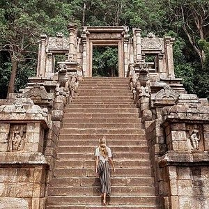
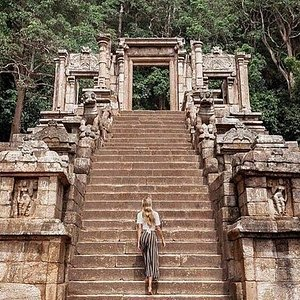

.png)
North Western Province is a province of Sri Lanka. The province consists of the districts of Kurunegala and Puttalam. Its capital is Kurunegala, which has a population of 28,571. The province is known mainly for its numerous coconut plantations.North Western Province is comprised of two administrative districts viz. Kurunegala and Puttalam.The provincial capital is Kurunegala that has a population of 28,571. The province is well known for its coconut plantations. Other main towns in this province are Chilaw (24,712) and Puttalam (45,661), both of which are small fishing towns. The majority of the population in the province is Sinhalese. There is also a substantial Sri Lankan Moor minority around Puttalam and Sri Lankan Tamils in Udappuwa and Munneswarama. Fishing, prawn farming and rubber plantations are other prominent industries of the region. The province has an area of 7,888 km2 and a population of 2,184,136. The climate is tropical, with a marked dry season, and temperatures averaging between 20°C in January and 25°C in March. The south of the province is wetter, with an annual rainfall of 2000 mm, but the northern part of the province is one of the driest regions in Sri Lanka with an average annual rainfall of 1100mm. The province is replete with many archaeological sites being the seat of four medieval kingdoms of Sri Lanka between the mid 12th and mid 14th centuries. Having been forced to move capitals due to foreign invasions, Sri Lankan kings nevertheless built magnificent citadels in areas like Panduwasnuwara, Dambadeniya, Yapahuwa and Kurunegala. Impressive remains of those citadels, palaces, Buddhist temples and monasteries provide breathtaking sightings to visitors.
 
